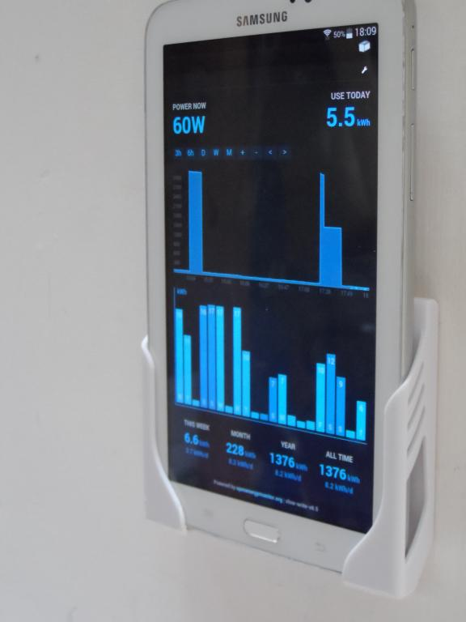
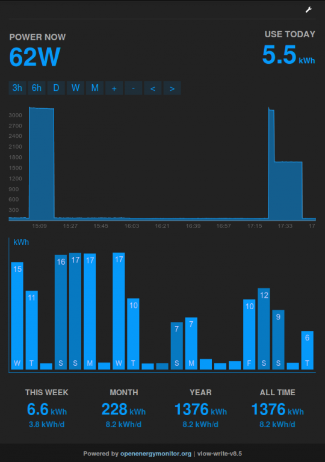
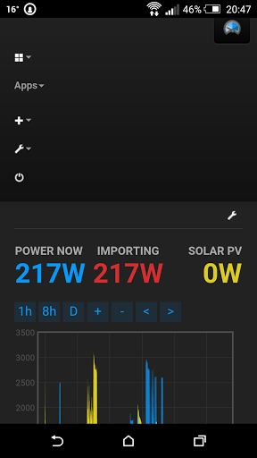
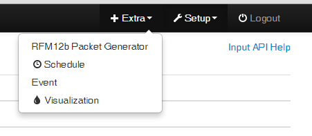
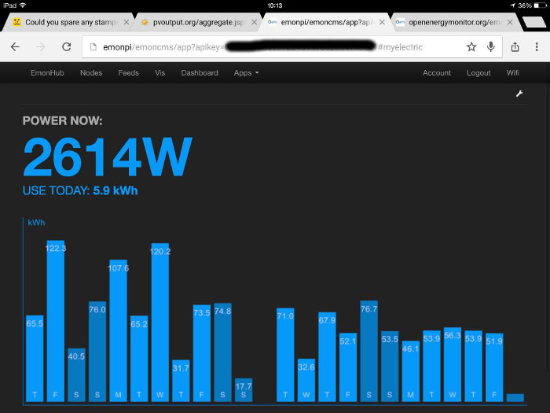

 
Pleased to announce a new version of the my electric app, there's a blog post about it here: http://openenergymonitor.blogspot.co.uk/2015/07/new-myelectric-app-realtime-power-graph.html
The summary of new features are:
- New realtime power graph view that presents a moving window for always on tablet displays. I also wrote a new custom graph library for this in order to be able to make better use of the screen as flot doesn't give many options for customising axes - at least that I could see..
- kWh totals for the present week starting from Monday, month, year and all time at the bottom of the page.
- kWh per day averages for each of these periods below the totals which makes it easier to compare this week, or month's usage to the year.
- the kwh per day bar graph now should now update correctly as the day rolls over to the next, and the daily data is based on the browser timezone.
Il apologise to those with lots of daily kwh/d data that this version doesnt support daily "power to kwh/d" feeds for generating the daily graph and instead focuses on the accumulating watt hour or kwh approach. I think this accumulating energy feed approach is better as it gets around the timezone issues present with the daily method and makes it easier to bring out the week/month/year totals. It also in time makes it possible to do time of day billing as its possible to extract the energy data for the time period requested rather than be limited by the a fixed daily interval.
The old version is still available in the archive here too: https://github.com/emoncms/archive/tree/master/app/myelectric
Re: New MyElectric Emoncms app, realtime power graph and energy totals
Looks awesome!
Does it still run on 8.4? I need the Input module of 8.4 as I use it for decoding the solar stuff which of course limits my upgrade possibility.
Does it require Redis to work? I have hosted Emon on a 24 core Windows Server running an Apache server just for Emon.
Thanks and good work!
Andi
Re: New MyElectric Emoncms app, realtime power graph and energy totals
Thanks! I dont think it will work with 8.4 as I did quite a bit of work to the way data is requested in 8.5 in order to make sure that the data returned was for the right interval which without this the daily data would quite likely be incorrect. It should be redis independent although I have only tested it on the emonpi and emonbase which has redis.
Why cant you upgrade to 8.5? whats missing in the 8.5 input module?
Re: New MyElectric Emoncms app, realtime power graph and energy totals
Ah ok, just living with the "Never touch a running system" attitude, haha :-)
Maybe I'm doing something wrong but it was not working anymore when I tried it on my server. I made a copy of the 8.4 DB and of the data folders and configured everything. I then downloaded the Node module from GIT and added it. I then changed the code of my solar "nodes" to use the new URL but they were not showing any data...
Get into the admin menu and did the DB update etc.
I will retry it later again. I also made some changes to the dashboard code itself to make my life a little bit easier when creating dashboards.
Re: New MyElectric Emoncms app, realtime power graph and energy totals
fair enough, dont want this to disrupt a running system!
Re: New MyElectric Emoncms app, realtime power graph and energy totals
Nice work Trystan, tried it on 'v8.6 experimental' using a variety of devices, and it renders well across most common screen sizes. The graph data also looks much more clearly defined and detailed, is it using a thinner graph border?
There has been a long standing annoying bug with the 'app' for several months, which is also present in this new version, and it concerns menus when using emoncms on a tablet or phone (Its ok on a lap/desktop).
When switching between dashboards using the menus, the expanded menu collapses after a selection has been made, but not so when switching between one 'app' function and another 'app' function. For example, you're currently on the 'My Electric' page, and using the menu decide to switch to 'My Solar', but although the 'My Solar' app loads ok, the menu is still expanded and does not automatically collapse as per the screen shot below. I've tried it on a ipad, 8" android tablet, iphone & HTC smartphone, so it's not just on one device.
Paul

Re: New MyElectric Emoncms app, realtime power graph and energy totals
Thanks, great to hear Paul, found the fix for the dropdown issue, the changes needed are in this commit: https://github.com/emoncms/emoncms/commit/31069454a7403e13f85a16057f2141...
Re: New MyElectric Emoncms app, realtime power graph and energy totals
Thanks Trystan, the apps are starting to consolidate their place in emoncms, with buckets of potential still left...
Paul
Re: New MyElectric Emoncms app, realtime power graph and energy totals
Trystan,
The dropdown part of app_menu.php needs to be in this format (also dont pass apikey in path) :
array('name' => 'My Solar&Wind', 'icon' => 'icon-asterisk', 'path' => 'app/myenergy', 'session' => 'read', 'order' => 4)Not:
array("My Solar&Wind","app$apikey#myenergy")I have a workaround for this since 8.5 in menu_view.php but will be removed to support icons and current page highlight.
Choose your icon name here http://getbootstrap.com/2.3.2/base-css.html#icons
Re: New MyElectric Emoncms app, realtime power graph and energy totals
As oem apps will inevitably have sustainability in their heart, can I suggest the 'icon-leaf'?
Paul
Re: New MyElectric Emoncms app, realtime power graph and energy totals
Great idea, really like the icon design. I will add this in.
Re: New MyElectric Emoncms app, realtime power graph and energy totals
Probably need to start thinking about other modules too...

Re: New MyElectric Emoncms app, realtime power graph and energy totals
Hi can anyone explain why the time scale across the bottom of this app is a day out of sync for me? For example today is Friday yet as you will see from the attached screen shot taken from my ipad the Friday total generation bar is complete and Saturday is building.
Thanks.

Edit resized pic and munged apikey - BT
Thanks for the edit!
Update - now that I have managed to get my data uploading to emoncms.org where this day error doesn't seem to be occurring this is no longer an issue for me.
Re: New MyElectric Emoncms app, realtime power graph and energy totals
What version of emoncms are you using?
Re: New MyElectric Emoncms app, realtime power graph and energy totals
low write v8.5